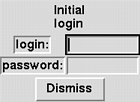
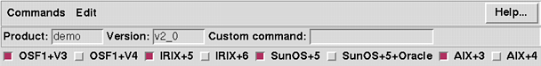
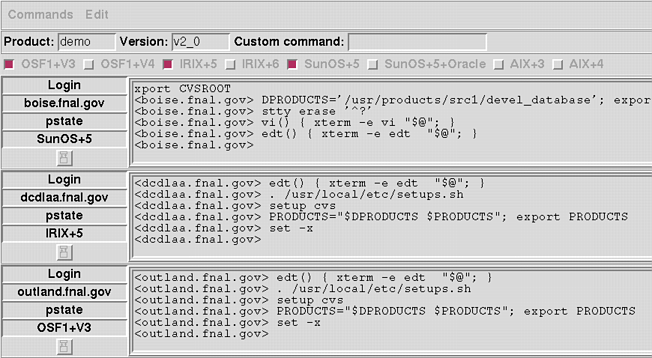

Using the buildmanager application build coordinator
Introduction
The buildmanager application build coordinator is a flexible,
configurable, tool which lets you build software on multiple systems
simultaneouosly, in an organized and consistent fashion.
It allows you to set up standardized build sequences and actions
which will be performed automatically, stop if/when things go wrong,
and allows interaction with various build systems to correct problems.
It is implemented in expectk, which combines the expect package
for working with interactive programs with the Tk windowing toolkit
and the Tcl scripting langauge.
Any system you can telnet to and run commands on can be used as a
build system with buildmanager.
Starting buildmanager
At Fermilab, buildmanager is provided as a ups product, so before
you can use it, you need to issue the command setup buildmanager
to set the appropriate environment variables, etc.
Since buildmanager uses the X Window system for displays, you need to be
sitting at an X window terminal when you start it.
Once these prerequisites are set, you can invoke buildmanager simply by
saying buildmanager at your shell prompt.
Initial screens
Two buildmanager windows should appear on your X Window display;
a login window:

and an interaction window:

The login window has an entry area for your login and password on the
build systems, and a button labeled Dismiss. If you were to press
return in the password entry field, or the Dismiss button,
buildmanager will proceed to log into systems marked as selected in
the interaction window.
For now, let's examine the interaction window first.
The interaction window initially has three sections. From top to bottom
they are:
- menu-bar
- string entry area
- selected-systems checkbuttons
The pressed-in buttons in the selected-system area show the operating
system names of the various systems that buildmanger currently knows about,
and each has a checkbutton to the left of the name that shows whether we
are currently selecting that system to be included.
You can click these buttons to toggle the selection on and off.
Logging in
After filling in a login and password in the login window, if you press the
Dismiss button, (or the Return key in the password entry box),
buildmanager will remove the login window and proceed to telnet to and
log into each of the currently selected systems.
A text area will appear for each system, with some status labels and
a window-sizing button to the left of each one.

In these text areas, you can watch buildmanager log into each system.
If your login or password is incorrect for some
system, buildmanager will re-prompt you for that system's login
information with the login window.
Buildmanger will make a few passes over each login session, running a
standard shell (currently /bin/sh), running a few startup commands
and setting a few shell functions so that it can interact with the windows
in a consistent fashion.
During the login procedure, most of the buttons and windows on the
buildmanager screen will grey-out and become inactive, untill the login
has completed.
Building Software
If you are using a configuration of buildmanager which has already been
configured for your environment, and everything goes smoothly, you can
build a given software product on the selected platforms, simply by
pulling down the Commands menu, and selecting the appropriate build command.
The system should proceed to obtain the sources from your source code
repository (e.g. cvs repository), perform any indicated initial setup,
build, test, and distribute the software.
Of course, in the real world, not everything goes smoothly when building
software on multiple platforms.
For example, a program might be missing a preprocessor symbol definition
needed to build on a given platform. In that case, when the compile fails
for that build on that platform, the build process for that platform will
halt, and the status lines next to the window for that product will
look like:
Ready
hostname.domain
make-all-Failed
which indicates that the "make all" command on that system printed
something that buildmanager recognized as an error which wasn't ignored
before stopping.
At this point, you can click on the text area next to the status lines,
and use the text area as a not-so-smart terminal, add some flags to the
Makefile, or do a make with appropriate extra command line arguments
(for example:
make "CFLAGS=-g -DFIXFLAG" all
)
and now when the make completes, buldmanager will proceed to continue
with the tests, etc. on this plattform.
Missed completions
Occaisionally, when enough things are going on in a build, the output
is sufficiently unusual that buildmanager will not notice that
you ran a given command and that it succeeded. If you are sure
it completed properly, you can rerun the command (or a faster version of it)
to convince buildmanager to continue with the build. For example,
you could run the command:
make -n all
to make buildmanager realize that a make all command has
complted successfully, and that it should move on to other tasks, like
testing and distributing.
Adding systems
You can then add build machines by clicking on their platform buttons
in the main window, or clicking again to delete.
Removing systems
You can remove a system by clicking on its platform button to remove it.
You can also close a host window by exiting from the login session.